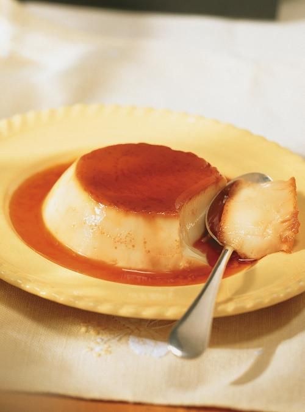

What you'll need...
- 1/2 cup (125 ml) sugar
- 2 tablespoons (30 ml) water
- 1/4 cup (60 ml) sugar
- 2 teaspoons (10 ml) vanilla extract
- 2 cups (500 ml) milk, hot
- 3 eggs, lightly beaten
How to do it...
Prep
- Preheat the oven to 180 °C (350 °F).
Caramel
- In a saucepan, cook the sugar and water until it is a dark golden brown (mahogany).
Divide among six 125 ml (1 / 2 cup) capacity ramekins. Allow to cool.
Flan
- Add the sugar and vanilla extract to the hot milk. Stir until the sugar has dissolved.
In a bowl, beat the eggs. Whisk in the hot liquid. Pour into the ramekins.
- Prepare a water bath by laying a towel in the bottom of large baking dish.
Place the ramekins in the dish and fill halfway up with simmering water.
Bake for about 40 minutes. The water should never boil.
- Remove from the oven and water. Cool. Refrigerate. Run the blade of a knife around
the ramekins, invert and serve very cold.